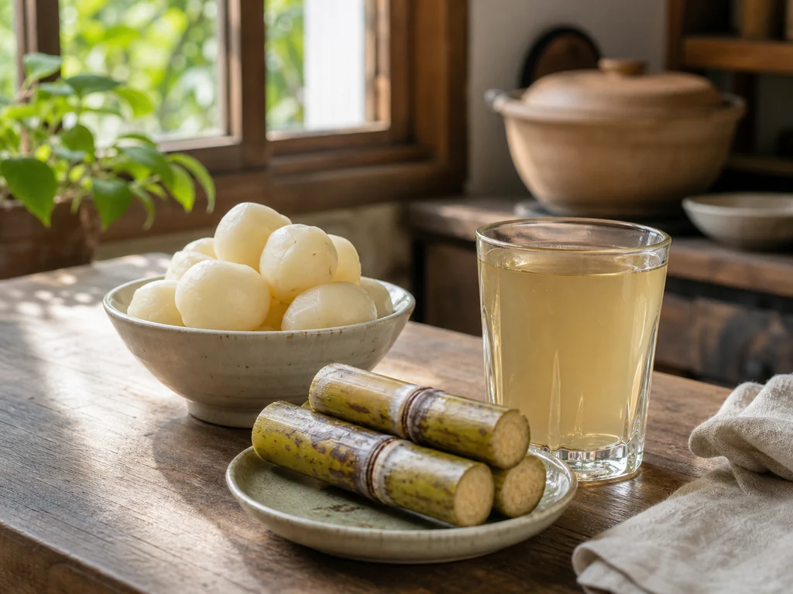
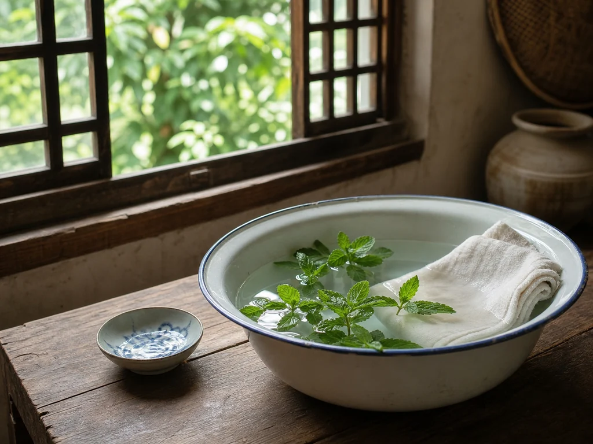
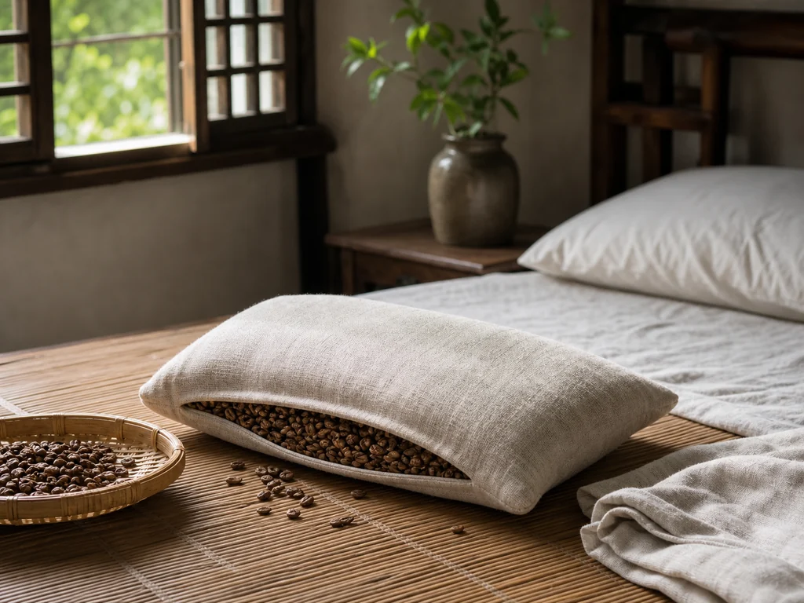
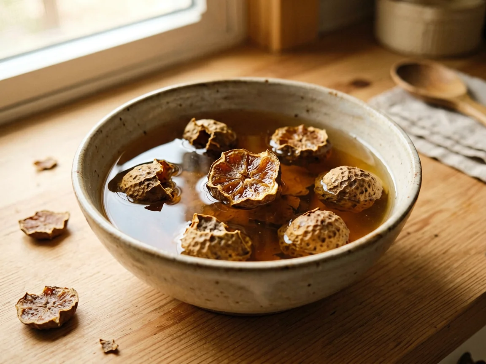
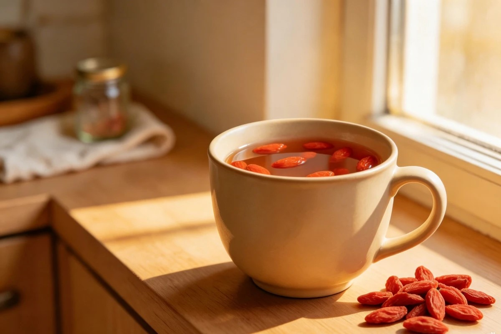

Chinese household customs, kept in small daily records.
Kitchen notes, seasonal rooms, old objects, and ordinary things done around the house.
Browse the archiveThe archive
Six ways into the household
Each group follows a place, material, or repeated part of the day rather than a fixed instruction.

Kitchen Comforts Market goods, pots, and cups left nearby.
Cloth Warmth Cloth, stored heat, and household care.
Sleep & Calm Bedrooms, bedding, and evening objects.
Everyday Rituals Small work repeated without ceremony. Seasonal Comfort Rooms and objects used as weather changes.Reading room
PDF Library
Some illustrated records are sent free to subscribers. Longer collections remain available as paid downloads.
Current free PDFTen Objects from the Chinese Summer Home


An illustrated record of household objects used through hot months.
Kitchen Chinese household traditions Simmered preparations
and folk practices View the guide →
Mung Bean Soup
A summer kitchen preparation documented in the guide's first section.
Tremella Soup
One of the simmered preparations recorded in the paid collection.
Household shelf
Household Shelf
Some links are to current equivalents of objects and ingredients mentioned in the archive.
 Dried chrysanthemum
Dried flower heads kept in kitchen jars.
View object
Dried chrysanthemum
Dried flower heads kept in kitchen jars.
View object

Dried goji berries Small dried berries for pantry tins. View object Dried mung beans A staple stored near the cooking pot. View object Moxa sticks Bundled sticks kept with household supplies. View object Wooden foot basin A portable basin for washing at home. View objectSome links are affiliate links. A qualifying purchase may earn Folk Calm a small commission at no extra cost. Read the disclosure.
Reading notes
Folk Calm records Chinese household customs, objects, and domestic routines as cultural material.
PDFs are made for personal reading and research.
Product links are identified as affiliate links where they appear.